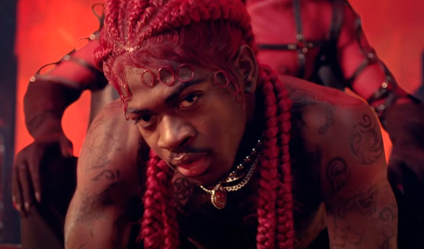
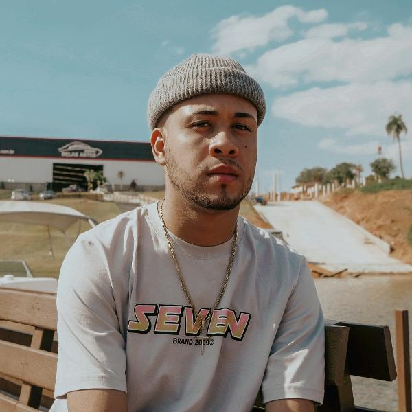
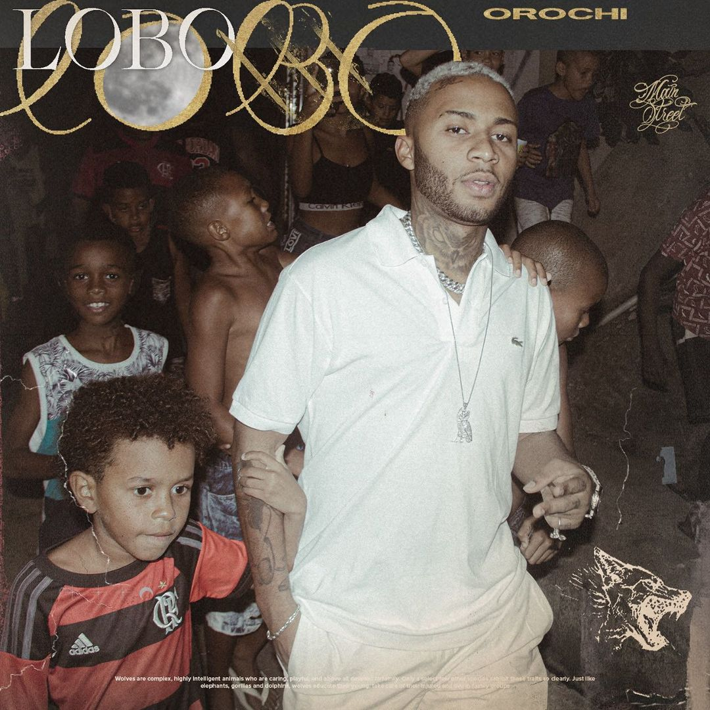

<!DOCTYPE html>
<html lang="en">
<head>
    <meta charset="UTF-8">
    <meta http-equiv="X-UA-Compatible" content="IE=edge">
    <meta name="viewport" content="width=device-width, initial-scale=1.0">
    <title>Top Charts</title>
    <link rel="stylesheet" href="charts.css">
</head>
<body>
    </html><div class="header">

        <div class="container">
    
            <h1> <a href="index.html">HolyTrap</a> </h1>
    
            <ul class="navbar">
                <!-- <li><span> <a href="index.html">Home</a></li> -->
                <li>  <a href="sobre.html">Sobre</a> </li>
                <li> <a href="charts.html">Top Charts</a> </li>
                <li> <a href="cadastro.html">Cadastro</a>  </li>
                <li> <a href="login.html">Login</a> </li>
            </ul>
    
        </div>
    
    </div> <br><br>

 <center>
     <h2>
         As mais ouvidas da semana
    </h2>
 </center>
 <div class="container2">
    <select name="" id="tc1" style="width: 88px;">
        <option value="0">----</option>
<option value="1">31/05/2021</option>
<option value="2">24/05/2021</option>
<option value="3">17/05/2021</option>

</select>
<button onclick="mostrar()">Mostrar Top Charts da semana</button> <br><br>
<div id="foto"></div>
 </div>
</body>

<script> function mostrar(){
var semana = tc1.value 
if(semana == 1){
    foto.innerHTML =`  Bipolar de novo, ficou em primeiro nas paradas dessa semana!   <br><br>
     MC Poze do Rodo ocupou a segunda posição!
    <br><br>
     Montero, do cantor Lil Nas X ocupou a 3° posição no ranking da semana! <br> <br>
     O viral do tiktok entrou em 4° lugar nos charts da semana <br> <br>
     O remix do Girl From Rio que teve a participação do rapper Dababy está em quinto nessa semana!
    `
}else if(semana == 2){
    foto.innerHTML = `  Bipolar ficou em primeiro nas paradas dessa semana!   <br><br>
     MC Livinho com seu novo Hit ocupa a segunda posição!
    <br><br>
     O trapper baiano Teto se mantém em nosso top 5 ocupando a 3° opção!
    <br><br>
     L7nnon teve seu hit ouvido mais de 80 milhões de vezes nas últimas semanas. O credenciando a nossa posição 4!
    <br><br>
    `
}else if(semana == 3){
    foto.innerHTML = ` O rapper paulista produziu e lançou uma das músicas mais virais do TikTok, o video clipe passa dos 100 milhões de visualizações <br><br> 
    Depois do lançamento de seu álbum, Justin Bieber está na 2° posição!<br><br>
    Leave the door open marca a parceria de Anderson .Paak e Bruno Mars. O R&B vem na 3° posição!<br><br>
     O feat dos rappers Future e Drake está em quase em 2 bilhões de views. Durante a semana, acumulou a 4° posição no nosso top charts.<br><br>
    Depois de lançar seu álbum, Orochi ocupa nossa 5° posição da semana com seu feat com MC Poze do Rodo!
    `
}else if (semana == 0){
    foto.innerHTML = ``
}
}


</script>
